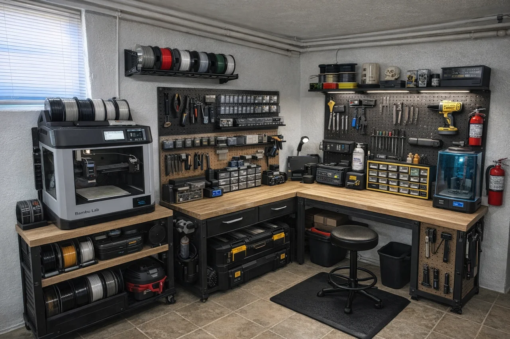

AutomationDocumentation in Progress
Splice Detection Automation
Automation work focused on detecting a splice and integrating that event into a machine workflow.
Engineering project experience
Mechatronics Engineer
Founder, JAKS Engineering Lab
Current roleElectrical and Automation Technician
Técnico eléctrico y de automatización
04 About Jonathan
I'm Jonathan Tapia, a mechatronics engineer currently working as an Electrical and Automation Technician (técnico eléctrico y de automatización). I analyze systems, make technical decisions, design solutions and verify results, grounded in hands-on experience.
My work includes splice detection, a metal-detection automation project at Continental Tire, an automated industrial mill developed for my thesis, and home automation that adds device-based control to existing equipment. Alongside hands-on manufacturing experience, these projects connect mechanical systems, electronics and control decisions. Professional experience, academic work and independent JAKS projects are identified separately in this portfolio.
Professional manufacturing experience informs my approach. Employer work is separate from independent JAKS projects; confidential machine and company records are not published here.
How I approach engineering
Practical experience helps identify the right questions. Engineering judgment connects each decision with a reason and a result.
Understand the function, operating conditions and interactions. Separate what is observed from what is assumed.
Compare possible causes and solution options against constraints, risk and available evidence.
Translate the chosen approach into mechanisms, electrical interfaces, controls or a working prototype.
Check behavior against the intended result. Record observations, limits and the next step without treating an untested change as a confirmed solution.
Professional foundation
My professional direction is engineering: understanding system behavior, choosing a technical approach, designing a practical solution and checking the outcome against evidence.
View Jonathan on LinkedInElectrical drawings, motors, drives, sensors, relays, pneumatics and systematic fault investigation.
Experience with Siemens TIA Portal and STEP 7 fundamentals, PLC interpretation and control-system learning.
ESP32, Raspberry Pi, connected-device experiments, CAD, digital fabrication and technical documentation.
Connecting mechanical constraints, electrical behavior and clear records of what was observed and tested.
Independent work
Industrial automation, academic projects and independent builds, with context and available evidence.
Automation work focused on detecting a splice and integrating that event into a machine workflow.
Engineering project experience
A metal-detection automation project completed as part of Jonathan’s professional experience at Continental Tire.
Professional experience · Continental Tire
An automated industrial mill developed as Jonathan’s mechatronics engineering thesis project.
Academic engineering project · Thesis
Giving existing equipment automatic operation and device-based control, instead of replacing the entire product.
Independent home automation